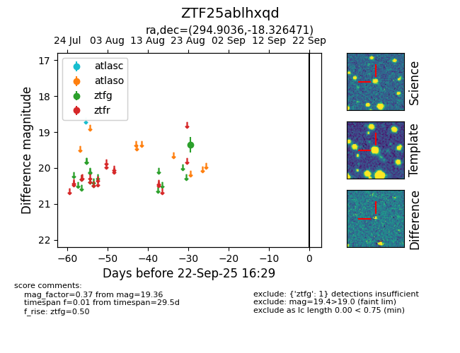

FINK: ZTF25ablhxqd
Lasair: ZTF25ablhxqd
ALeRCE: ZTF25ablhxqd
ZTF25ablhxqd (ztf,fink)
equatorial (ra, dec) = (294.9036,-18.32647)
galactic (l, b) = (21.3942,-18.64267)

last ztfg=19.36
1 ztfg detections